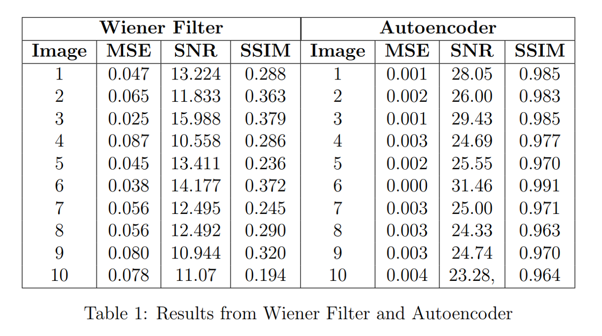

Research
My research interests include machine learning, computer vision, image and video processing, and digital signal processing. I'm fascinated by how these technologies can teach computers to see and understand the world around them.
Publications
Projects

|
Persian Car Plate Number Recognition Using RaspberryPi
Developed a Persian car plate recognition system that utilizes a Raspberry Pi equipped with a camera. The system first detects the license plate in an image, then employs image processing and machine learning techniques to recognize the numbers on the plate.
|
|

|
Traditional vs Modern Image Denoising Techniques: Exploring Wiener Filter and Autoencoders
Explored both traditional and modern image denoising techniques, including the Wiener filter for traditional methods and autoencoders for modern approaches. Evaluated their performance using metrics such as Mean Squared Error (MSE), Signal-to-Noise Ratio (SNR), and Structural Similarity Index (SSIM) to determine the most effective method for denoising noisy images.
|
Experience
|


{kind=link}